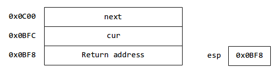

How does thread/process switching work in Pintos?¶
We’ll start with kernel threads, and then move on to processes.
Threads in memory¶
All the information for a thread is contained in a single page of memory (4 KB). The struct thread is stored at the bottom of the page, and the stack grows from the top bottom.
See https://uchicago-cs.github.io/pintos/pintos_6.html#SEC97
Suppose we have a thread that runs a function called thread_one()
(i.e., when we called thread_create, we passed thread_one
as the function parameter). Let’s skip how the thread is created
for now.
However, note how the first entry in the stack isn’t thread_one.
It’s kernel_thread.
/* Function used as the basis for a kernel thread. */
static void
kernel_thread (thread_func *function, void *aux)
{
ASSERT (function != NULL);
intr_enable (); /* The scheduler runs with interrupts off. */
function (aux); /* Execute the thread function. */
thread_exit (); /* If function() returns, kill the thread. */
}
That thread_one function may itself call other functions,
which may call other functions, etc. The information about
each function call is added to the stack (see https://uchicago-cs.github.io/pintos/pintos_3.html#SEC50)
Let’s say the thread is in the middle of running function
foobar(). The thread’s memory may look like this:
ESP: CPU stack pointer
What happens during an interrupt¶
When an interrupt happens, the CPU automatically pushes the following values in the stack:
- SS: Stack Segment Selector
- ESP: Stack pointer
- EFLAGS: CPU flags
- CS: Code Segment Selector
- EIP: Instruction Pointer (Program Counter)
We can ignore selectors for now.
It then jumps to the memory address specified for the interrupts in the IDT. In Pintos, the IDT is set up to always call intr_entry
https://github.com/uchicago-cs/pintos/blob/master/src/threads/intr-stubs.S#L5-L39
This code pushed additional data into the stack
(mostly CPU registers) and sets up a call to intr_handler
(https://github.com/uchicago-cs/pintos/blob/master/src/threads/interrupt.c#L345)
which has a single parameter: a pointer to a
struct intr_frame (https://github.com/uchicago-cs/pintos/blob/master/src/threads/interrupt.h#L19-L56). This struct provides convenient
access to the interrupt stack frame.
So, after an interrupt, the stack looks like this:

And if we’re processing a timer interrupts, intr_handler would call timer_interrupt, which in turn would call thread_tick.
If we’re not switching to another thread, these functions would return. When intr_handler returns, it goes back to the code in intr-stubs.S and “falls through” to intr_exit, which restores the saved values in the stack (popal, popl) and discards the Pintos-saved information. We’re left with only the OS-saved information. Then in calls iret, which restores the eip and esp we saved.
What happens during a thread switch¶
If a thread has used up its timeslice, thread_tick will call intr_yield_on_return. This doesn’t yield at that point. Instead, it modifies a flag to let the interrupt handler that, before returning from the interrupt, it should switch to a different thread.
So, after thread_tick and timer_interrupt return, intr_handler will call thread_yield, which calls schedule. schedule picks the next thread to run and calls switch_threads with two parameters: cur (the current thread) and next (the next thread to run)

switch_threads is implemented in switch.S
The key to understanding switch_threads is to first understand that, if we’re switching to another thread, that other thread must’ve also been running switch_threads when it was preempted. In fact, a thread that voluntarily or involuntarily yielded the CPU will always have a stack that looks like one of the following:
Intuition behind switch_threads: esp is the CPU stack pointer. It currently points to the stack of the currently running thread, but if we switch it to point to the other thread, we will have yielded control to that thread.
Let’s take a closer look at what happens inside switch_threads.
Right after calling switch_threads, the bottom of the stack will look like this:
First, we need to save some registers (this is just a requirement of the x86 architecture):
pushl %ebx
pushl %ebp
pushl %esi
pushl %edi
And our stack will now look like this:

Note: offsets from esp
.globl thread_stack_ofs
mov thread_stack_ofs, %edx
threads/thread.c:
uint32_t thread_stack_ofs = offsetof (struct thread, stack);
struct thread
{
/* Owned by thread.c. */
tid_t tid; /* Thread identifier. */
enum thread_status status; /* Thread state. */
char name[16]; /* Name (for debugging purposes). */
uint8_t *stack; /* Saved stack pointer. */
/* etc. */
}
threads/switch.h defines SWITCH_CUR and SWITCH_NEXT as the offset of cur and next within the stack frame (20 and 24).
So, SWITCH_CUR(%esp) gives us the address of the current thread
20(%esp) translates to “the contents of esp + 20”
Similarly for SWITCH_NEXT
movl SWITCH_CUR(%esp), %eax
movl %esp, (%eax,%edx,1)
(%eax,%edx,1) = (eax + edx*1)
i.e.
cur->stack = esp
movl SWITCH_NEXT(%esp), %ecx
movl (%ecx,%edx,1), %esp
i.e.
esp = next->stack
We’ve changed the stack pointer!!!
Restores registers and returns:
popl %edi
popl %esi
popl %ebp
popl %ebx
ret
Switching between kernelspace and userspace¶
[Assumes we have discused paging and segmentation]
The above applies specifically to kernel threads. In Project 2, you will have to implement user processes.
To understand the relation between kernelspace and userspace in Pintos, let’s look at how physical and virtual memory is laid out
Pintos only uses 64MB of memory, laid out like this:
0x04000000 +----------------------------------+
| |
| page pool |
| (63 MB) |
| |
vvvvvvvvvvvvvvvvvvvvvvvvvvvvvvvvvv
^^^^^^^^^^^^^^^^^^^^^^^^^^^^^^^^^^
| |
| |
0x00100000 +----------------------------------+
| |
| |
0x000A0000 +----------------------------------+
| |
| Kernel code + data |
| |
0x00020000 +----------------------------------+
| |
| |
0x0000D000 +----------------------------------+
| initial kernel thread |
0x0000E000 +----------------------------------+
| |
0x00007E00 +----------------------------------+
| Boot loader |
0x00007C00 +----------------------------------+
| |
| |
0 +----------------------------------+
(note: ommitting some parts; full map here: https://uchicago-cs.github.io/pintos/pintos_6.html#SEC95)
A process’s virtual memory looks like this (let’s assume it has already been loaded; we’ll discuss loading later on)
0xFFFFFFFF +----------------------------------+
| |
| Unused |
| |
vvvvvvvvvvvvvvvvvvvvvvvvvvvvvvvvvv
^^^^^^^^^^^^^^^^^^^^^^^^^^^^^^^^^^
| |
0xC4000000 +----------------------------------+
| |
| Mapped to Physical Memory |
| |
0xC0000000 +----------------------------------+ PHYS_BASE
| user stack |
| | |
| | |
| V |
| grows downward |
| |
| |
| |
| |
| grows upward |
| ^ |
| | |
| | |
+----------------------------------+
| uninitialized data segment (BSS) |
+----------------------------------+
| initialized data segment |
+----------------------------------+
| code segment |
0x08048000 +----------------------------------+
| |
| |
| |
| |
| |
0 +----------------------------------+
This sounds like we can access kernel memory from a user process. Why not?
Reminder: x86 has Privilege Levels. If PL=0 is “Supervisor” level, and allows running all instructions. PL>0 (but typically 3) is “User” level and does not allow certain operations (like I/O, updating certain registers, etc.)
For now, we can think of there being some place where “current PL” is specified.
All pages above PHYS_BASE are set with the Supervisor bit set to 1. So, if a user process is running in PL=3, it cannot access that memory.
When we load a program, we do the following:
- Create a new kernel thread (one thread per program). The function this thread runs is the program loader. https://github.com/uchicago-cs/pintos/blob/master/src/userprog/process.c#L42. This thread is placed on the ready list and will eventually run.
- Create a page table that with no mappings between 0 and 3GB, and with the physical memory mappings (with Supervisor bit set to 1)
- Read program from ELF file. Two segments: text and data. Use palloc to allocate pages from the page pool for these segments.
- Create mappings between virtual memory and physical memory for these pages.
- Set up stack (Project 2)
- Get entry point from ELF
At this point, could use JMP to the entry point. Why not? We’re running at PL=0. Arguably, we could just “set PL to 3” before the JMP, but the mechanism is more complicated than that.
In x86 architecture, we have six segment selectors (CPU registers):
- cs: Code Segment
- ss: Stack Segment
- ds: Data Segment
- es, fs, gs: More data
The value of cs, ss, ds, etc. is a selector: an index into a table of segment descriptors. In x86 there are two tables: the Global Descriptor Table (shared by all processes) and the Local Descriptor Table (one per process). The selector determines what segment you are accessing.
However, modern x86 operating systems don’t create distinct segments per process. Instead, each segment is as big as the memory, and we only use the GDT, which looks like this:
| Index | Description | PL | Base | Limit |
| 0 | Empty | |||
| 1 | Kernel Code | 0 | 0x00000000 | 0xFFFFFFFF | |||
| 2 | Kernel Data | 0 | 0x00000000 | 0xFFFFFFFF |
| 3 | User Code | 3 | 0x00000000 | 0xFFFFFFFF |
| 4 | User Data | 3 | 0x00000000 | 0xFFFFFFFF |
| 5 | TSS | Pointer to Task State Segment | ||
(note: selectors are actually addresses in memory, not 0,1,2,3, etc. We use numbers for simplicity)
So, if cs is set to 1, it mean I can run privileged instructions. Similarly, if ds is set to 4, I wouldn’t be able to access pages that require PL=0.
Our Privilege Level is determined by the current segment selectors
When the computer boots, we set up the GDT just with entries 0,1,2 and run in PL=0. Later on, we set up the complete GDT (https://github.com/uchicago-cs/pintos/blob/master/src/userprog/gdt.c#L33-L54)
So, back to the user process: we’ve set everything up, and now we need to jump to its entry point, and switch cs to segment 3 and all other selectors to segment 4. This is done by simulating a return from interrupt:
https://github.com/uchicago-cs/pintos/blob/master/src/userprog/process.c#L69-L75
When an interrupt happens, the interrupt frame includes the EIP, ESP, and segment selectors at the time of the interrupt. So, creating an interrupt frame with the process entry point, stack pointer, and the desired selectors, and calling IRET has the effect of switching the PL and “going to userspace”.
But how do we go back to PL=0 when an interrupt happens (or a system call)?
Two things:
- The interrupt descriptor table includes the code segment to use when processing the interrupt (and it is set to be the kernel one). The interrupt entry point then sets the data segment selectors to the kernel ones.
- We also need to switch to the stack for the kernel thread associated with this process. In x86, we use a Task State Segment. Originally designed so there would be one TSS per task (keeping information about each task), but in practice there is only one TSS. When an interrupt happens, the TSS tells us what value to set the stack pointer to when going into kernel space. So, before a kernel thread “returns from interrupt” to userspace, we save that value in the TSS:
https://github.com/uchicago-cs/pintos/blob/master/src/userprog/process.c#L132
https://github.com/uchicago-cs/pintos/blob/master/src/userprog/tss.c#L101-L106